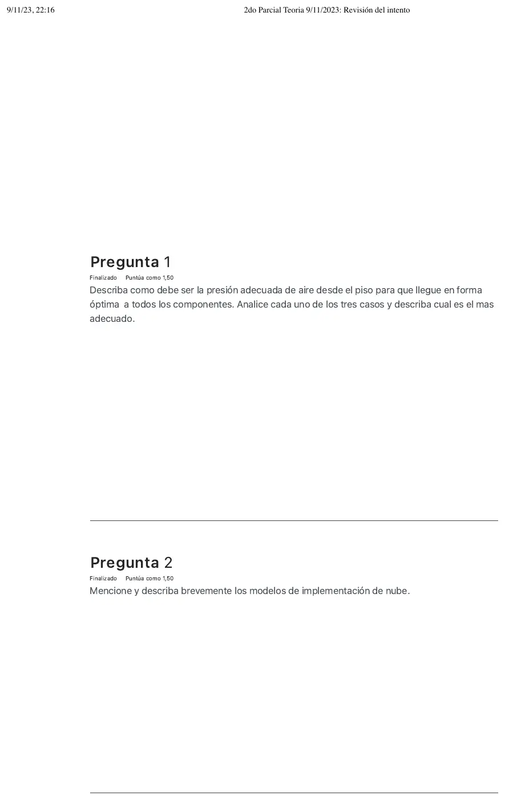
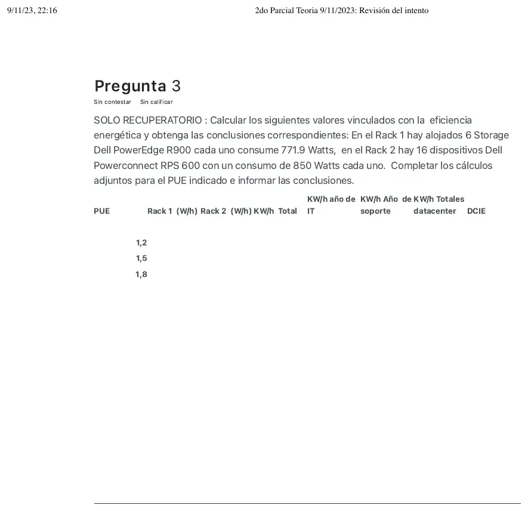
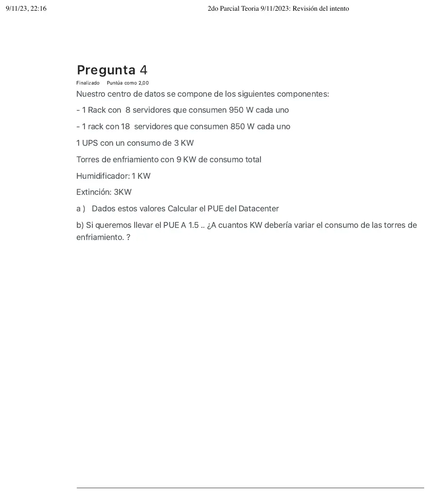
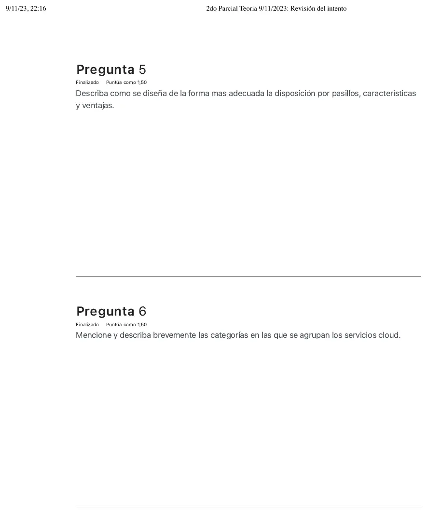
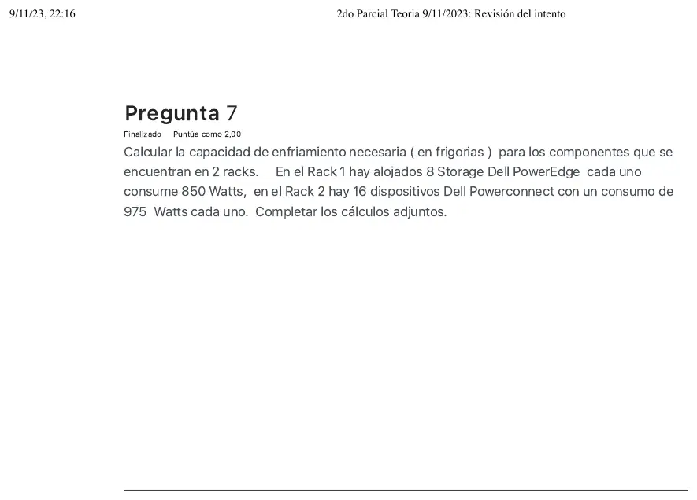

2° parcial de teoría, 09/11/2023
2° parcial, teoría, 09/11/2023
Enunciado










Propuesta de respuesta
Respuesta no verificada. La propuso Luta Studios con inteligencia artificial y ningún docente la revisó. Puede tener errores.
Pregunta 1.
- Flujo bajo: la presión es insuficiente y el aire no alcanza la parte superior del rack. Los equipos de arriba quedan sin refrigerar.
- Flujo correcto: refrigera de manera uniforme a todos los equipos del rack. Es el más adecuado.
- Flujo excesivo: el aire sube de forma ineficiente y no refrigera la parte trasera del rack.
La velocidad de los ventiladores EC se regula con esa diferencia de presión.
Pregunta 2. Sin propuesta. El Drive no trae apunte de nube, y la respuesta no se puede sacar del material de la materia.
Pregunta 3. Solo recuperatorio. Primero, la carga de IT.
- Rack 1: W.
- Rack 2: W.
- Total: 18231,4 W, o sea 18,2314 kW.
- Energía de IT por año: kWh.
Como en la práctica de modelado del apunte 5, el total es PUE por IT, el soporte es la diferencia y el DCiE es .
| PUE | Rack 1 (W) | Rack 2 (W) | kW total | kWh año de IT | kWh año de soporte | kWh totales del data center | DCiE |
|---|---|---|---|---|---|---|---|
| 1,2 | 4631,4 | 13600 | 18,23 | 159707,06 | 31941,41 | 191648,48 | 83,3 % |
| 1,5 | 4631,4 | 13600 | 18,23 | 159707,06 | 79853,53 | 239560,60 | 66,7 % |
| 1,8 | 4631,4 | 13600 | 18,23 | 159707,06 | 127765,65 | 287472,72 | 55,6 % |
Conclusiones:
- Los equipos de IT consumen lo mismo en los tres casos. Lo que cambia es el soporte, que crece con el PUE.
- Con PUE 1,2 el data center es muy eficiente, según la tabla del apunte, y el 83 % de la energía va a IT. Con 1,5 es eficiente, y con 1,8 queda entre eficiente y promedio, con solo el 56 % para IT.
- Pasar de 1,8 a 1,2 ahorra kWh por año.
Pregunta 4. a) IT son los servidores de los dos racks, y el soporte es todo lo demás.
- IT: W, o sea 22,9 kW.
- Soporte: kW, de UPS, torres, humidificador y extinción.
- Total: kW.
b) Para PUE 1,5 con la misma IT, el total tiene que ser kW. El soporte queda en kW. Sin tocar la UPS, el humidificador ni la extinción, que suman 7 kW, a las torres les quedan kW.
Las torres tienen que pasar de 9 kW a 4,45 kW, o sea bajar 4,55 kW.
Pregunta 5. Los racks se alinean frente con frente, y quedan pasillos intercalados, uno frío y uno caliente. Los equipos toman aire frío por el frente y expulsan el caliente por atrás. El aire frío entra por rejillas en el pasillo frío y el CRAC toma el caliente. Aislar los pasillos reduce todavía más el consumo. Según el apunte, los pasillos fríos cerrados sirven hasta 20 kW por rack, con un ahorro de 20 a 25 %.
Pregunta 6. Sin propuesta. El Drive no trae apunte de nube, y la respuesta no se puede sacar del material de la materia.
Pregunta 7. Todo lo que consumen los equipos termina en calor, así que el aire acondicionado tiene que sacar esa misma potencia. Se pasa a BTU/h con el factor del apunte 6 y de ahí a frigorías.
| Rack | Cuenta | Potencia | BTU/h, con W x 3,41 | Frigorías, con 4 BTU/h por frigoría |
|---|---|---|---|---|
| 1 | 6800 W | 23188 | 5797 | |
| 2 | 15600 W | 53196 | 13299 | |
| Total | 22400 W | 76384 | 19096 |
Hacen falta unas 19096 frigorías por hora.
Sale de apuntes de alumnos
El paso de BTU/h a frigorías no está en el apunte. El factor de 4 BTU/h por frigoría es el que usan tres exámenes de alumnos, sin corrección de la cátedra que lo confirme. Preguntalo antes del parcial.
Exámenes de alumnos de 2022, 2023 y 2025
Respuesta no verificada. Puede tener errores.
Se armó con Resumen del 2° parcial de teoría, secciones Presión de aire, Eficiencia energética, Pasillos fríos y calientes, Estrategias de climatización y Calor, BTU y frigorías, y la práctica de modelado del apunte 5 para la tabla de PUE.
Quedó en duda: Las preguntas 2 y 6 son de nube y quedan sin propuesta, porque no hay apunte. En la pregunta 3 la hoja escribe «W/h» y «KW/h»; se leyó como W, kW y kWh por año, que es lo que usa el ejemplo del apunte 5. En la pregunta 4 la UPS, el humidificador y la extinción se contaron como soporte, y se supuso que solo cambian las torres. El factor de 4 BTU/h por frigoría de la pregunta 7 no está en el apunte, sale de exámenes de alumnos. Confirmá con tu comisión qué factor se usa. La tabla adjunta que pide completar no está en la imagen.
¿Cómo te fue?
Marcá cada tema del examen.
- presión de airePresión de aire, en 2° parcial, teoría
- nubeNube, en 2° parcial, teoría
- PUEPUE y DCiE, en 1° parcial, teoría
- pasillosPasillos fríos y calientes, en 2° parcial, teoría
- frigoríasCalor, BTU y frigorías, en 2° parcial, teoría